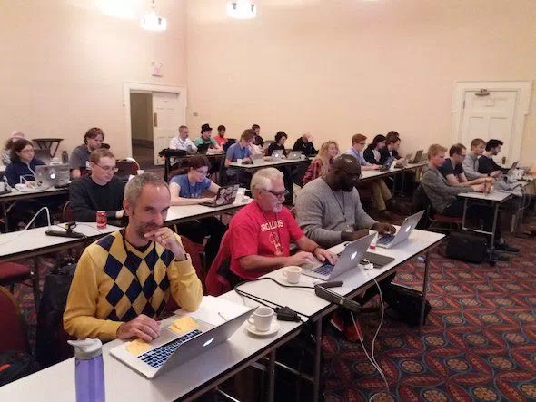

Introduction to Rust [2020]
- Event: programmier.bar
- Date: January 2020
- Location: Bad Nauheim, Germany
- Slides
Open-source maintainer, speaker, rebel. About me.
Good talks are both, fun and educational. Here's a list of previous events where I spoke. I try to make every talk and every workshop as unique as possible. If you would like me to speak at your event, let's get connected!
We’ll teach the basics, talk about pitfalls, and provide an environment for experimentation. Experience with embedded development is not required, but basic Rust experience would be helpful. Every participant will be provided with a LPC845-BRK development board, free of charge and for them to keep.
Let me show you why this is cool and how to get started with WebAssembly in Go, C, and Rust.
We will also learn about up and coming features of WebAssembly (like WASI)
that will make it even faster and more versatile.
Let's change the way we write software forever!
We will use a little tool called cargo-inspect, which was built for teaching Rust internals. The goal is to make the compiler more approachable to mere mortals.
